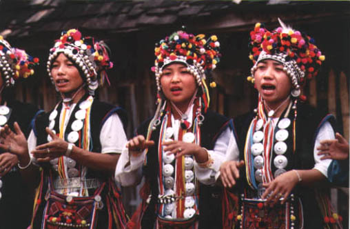
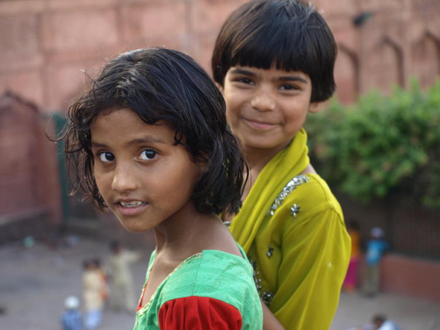

Naslovna
Narodi Azije
Općenite informacije o Aziji i njezinim stanovništvom
Azija graniči s Europom na zapadu (granice su planinski masivi Kavkaz i Ural na kopnu, te morski prolazi Bospor i Dardaneli na moru) i Afrikom na jugozapadu (Sueski kanal, Crveno more i prolaz Bab-el-Mandeb). Australija se nalazi južno a Amerika istočno od Azije i nemaju kopnenu granicu s njom.
Prema procjeni za 2002. godinu Azija je imala oko 3,8 milijarde stanovnika (bez europskog dijela država Rusije i Turske i afričkog dijela Egipta), što je 58 % ukupnog stanovništva svijeta. Prosječna gustoća naseljenosti je oko 84 stanovnika/km2, čime je ujedno i najgušće naseljen kontinent. Na njoj se nalaze i dvije najmnogoljudnije države svijeta: Kina i Indija, obje s preko milijardu stanovnika.Razmještaj stanovništva je veoma neujednačen, čemu su najvise doprinjeli prirodni uvjeti.
- Većina stanovnistva koncentrirana je u monsunskom području Južne i Istočne Azije. U ovim dijelovima prosjecna gustina naseljenosti prelazi 500 st./km2. Popis zemalja/teritorija poredanih po gustoći stanovništva (stanovnika/km2).
- Pri izračunu korištena je ukupna površina zemalja uključujući i vodene površine, stoga dobivene brojke mogu odstupati od onih u člancima za svaku pojedinu državu/teritorij. Rusija, Egipat i Turska se također navode u tablici, iako su te države djelomično u Aziji. Cipar, koji je u Europi, smatra se otokom Azijskoga Sredozemlja. Gruzija, Armenija i Azerbejdžan su također navedene.
Upoznajte azijske narode
Ako biste više otkrili o narodima Azije, molimo vas da zatvorite ovaj projekant i idete na sljedeći projekant.
Copyright © 2016.Fan Page | Sva prava pridržana | Dizajnirano od strane W3Layouts | Petra Jakopović 3.Web

Narodi Azije
Azijski narodi
Kliknite na željenu sliku i proučite narod koji ste odabrali.
Copyright © 2016.Fan Page | Sva prava pridržana | Dizajnirano od strane W3Layouts | Petra Jakopović 3.Web
Galerija
Galerija
Arapi
Turci
Japanci
Kinezi

Indijci

Tibetanci
Rusi
Mongoli

Židovi
Copyright © 2016.Fan Page | Sva prava pridržana | Dizajnirano od strane W3Layouts | Petra Jakopović 3.Web

Kontakt
Kontaktirajte nas
U slučaju nejasnoća ili nedovoljnih informacija, pošaljite nam e-poruku i mi ćemo Vam pokušati što prije odgovoriti. Ukoliko imate bilo kakvih pitanja, poteškoća ili želite saznati više, kontaktirajte nas putem web forme.
Naši podaci
Naša adresa:Saskatchewan Dr NW, Edmonton
Phone: +61 491 570 157
87 Ave 2nd Ave South
Saskabush, SK S7M 1T6
Radno vrijeme
Pon. - Četvrtak
Petak
Subota
Nedjelja & Blagdani
8 h - 15 h
8 h- 18 h
9 h - 15 h
Zatvoreno
Copyright © 2016.Fan Page | Sva prava pridržana | Dizajnirano od strane W3Layouts | Petra Jakopović 3.Web
Arapi
Arapi (arapski: ??? ‘arab) su semitski narod koji je većim dijelom nastanjen na Bliskom Istoku i u sjevernoj Africi. Arapa ima oko 100-125 milijuna, i postoje tri klasifikacije pripadnosti arapskom narodu: po politici, jeziku i porijeklu. Na osnovi ove tri klasifikacije broj Arapa je rastezljiv, jer ako se ide po broju ljudi kojima je arapski prvi jezik - njihov broj je tada 300 milijuna. Arapi govore arapskim jezikom i koriste se arapskim pismom.
Semitski narod nastanjen na Srednjem Istoku i sjevernoj Africi od Maroka do Omana, i od Turske do Jemena i Sudana na jugu. Geografski Arapi se prostiru na nekih 10 milijuna četvornih kilometara i broje najmanje 250,000,000 pripadnika. Oko 4 milijuna Arapa živi također u Europi i oko 2 milijuna u Americi. Srce arapske zemlje je Saudijska Arabija i Jemen, područje poznato kao Hijaz. Oko 610. godine, rođenjem Islama, Hijaz postaje trgovačko središte duž karavanskih putova. Meka postaje jedan od najznačajnijih gradova.
Etnički, Arapi su uglavnom tamnokosi i smeđih očiju, puti svijetle, ali i ona varira od mjesta do mjesta. Po vjeri su većinom sunitski muslimani, i tek 10% šijiti (osobito u Jemenu, dijelu Iraka i obali Perzijskog zaljeva). Prvenstveno Arapi su, uz Židove, jedan od dva naroda kojima je porijeklo dao Sem, Hamov brat. Kroz svoju povijest osnovali su cijeli niz država, to su: Alžir, Bahrein, Egipat, Irak, Jordan, Kuvajt, Libanon, Libija, Maroko, Oman, Katar, Saudijska Arabija, Sudan, Sirija, Tunis, Ujedinjeni Arapski Emirati, Jemen, i Palestina koja se još bori za svoj nastanak i priznanje. Socijalno Arape dijele na stalno-naseljene (ruralni ' fellahin' = seljaci i urbani ' hadar', gradski Arapi ) i nomadski, poznajemo ih kao Beduine (Bedouin). Postoje i više jezično semitiziranih (točnije arabiziranih) naroda, ali oni nisu Arapi, i etnički su nešto drugo, osobito ima arabiziranih Židova u sjevernoj Africi, Jemenu i Iraku. Arabizirani su i neki Kopti (ovi su pak porijeklom pravi Egipćani, hamitski narod čiji su preci utemeljili egipatsku kulturu i državu) Među hamitskim Berberima ima također dosta arabiziranih grupa, nomada koji naseljavaju pustinjske predjele sjeverne Afrike.
Arapski svijet odnosi se na arapske zemlje koje se nalaze na području sjeverne Afrike, od Atlantskog oceana na zapadu, zatim duž obale Sredozemnog mora, sve do Crvenog mora te na području Arapskog poluotoka odnosno država Bliskog istoka.
Židovi
Židovi su semitski narod koji živi u Izraelu, te raspršeno u Europi, Americi i po svijetu. Nema pouzdanih podataka o vremenu i razlozima doseljavanja u Europu, a povijesni izvori ih spominju od antičkih vremena. Bili su izloženi čestim progonima od kojih je najveći bio Holokaust. U 20. stoljeću, a osobito poslije drugog svjetskog rata naseljavaju se u Palestini gdje osnivaju državu Izrael.
Hebrejski ?????? (izg. yehudi, pl. yehudim =Judejci) izvor je našega naziva Židovi, kao i naziva na mnogim drugim jezicima (njem. Juden; eng. Jews). Ovaj naziv, koji je nastao po jednom od židovskih plemena (Juda), počinje se upotrebljavati kada se kraljevstvo Izraela podijelilo na Sjeverno i Južno (Juda), a osobito nakon povratka iz Babilonskoga ropstva. Hebrejski naziv B'nei Yisrael (Izraelci) označavao je Sjeverne i Južne Židove. Njihova vjera je judaizam, koja ih čvrsto povezuje širom svijeta. Židove koji žive na područjima koje je nekada pripadalo otomanskom carstvu često nazivaju Ćifuti. Ovaj naziv nastao je od turskog Çifut i često se koristi u negativnom kontekstu.
Neki jezici izvode naziv za Židove iz hebrejskoga ????? (čit. ‘yvrim =Hebreji; srp. Jevreji, tal. Ebrei).
Zanimljivo je, što je redovna zloupotreba korijena "žid" u ruskom jeziku dovela, zbog značajnog otpora u intelektualnim krugovima 19. stoljeća, do izmještenja uvrijedljivog naziva "žid" samonazivom "jevrej". U Hrvatskoj takvog otpora nikada nije bilo, te stari naziv "Židov" ostao je sve do danas; ali na primjer u Sloveniji "Žid" se smatra uvredom, a pravilni naziv je "Jud."
Judaizam je za Židova vjera i 'način života'. Fizički i po jeziku Židovi se danas mnogo razlikuju od mjesta do mjesta.
Njih ipak danas najviše dijele na dvije glavne grupe. Prvu grupu čine Aškenazi (jidiš: jedn. Ashkenazi, mn. Ashkenazim), ova riječ u u hebrejskom označava 'Nijemca'. Mnogi Aškenazi živjeli su u Njemačkoj, gdje su govorili jezikom jidiš, te središnjoj i istočnoj Europi. Tokom Drugog svjetskog rata mnogi Aškenazi su stradali po logorima.
Druga grana Židova poznata je kao Sefardi (Sephardi), u hebrejskom označava ‘Španjolca’, njih ima danas u Španjolskoj, Portugalu, Sjevernoj Americi i na cijelom području gdje se nekad prostiralo Tursko Carstvo, kamo su se odselili nakon progona iz Španjolske.
Ine grane Židova nazivane su raznim imenima: Bet Israel ili Etiopski Židovi, u sjeveroistočnoj Africi; Buharski Židovi, u središnjoj Aziji; Perzijski Židovi, Iran; Mizrahi, grupe Sefarda u sjevernoj Africi; Jemenski Židovi; Omanski Židovi; Romanioti u Grčkoj; U Italiji su poznati Bené Roma Židovi. Židova ima i na Kavkazu, Kini, Indiji, i drugdje. Sastavni dio imena raznih grupa Židova su riječi 'Beta', 'Bene' ili 'Bnei'. Mnoge grupe Židova u svijetu danas nalikuju narodima u čijoj sredini žive i služe se jezicima zemlje-domaćina.
Turci
Turci su brojan narod kojeg čini oko 70 milijuna pripadnika. Oko 85% Turaka živi u matičnoj domovini Turskoj, ostali su raspoređeni po susjednim zemljama, a oko 6 milijuna ih je naseljeno u Zapadnoj Europi (najviše u Njemačkoj) 3,5 milijuna.
Prema popisu stanovništva iz 2000. godine Turska je imala 67.844.903 stanovnika, ili 87 stanovnika/km2. Od toga je 10 milijuna živjelo na europskom, a 58 milijuna na azijskom dijelu države.
Zbog toga što se u Turskoj ne izvodi etnički popis stanovništva nego samo opredijeljenje po jeziku, teško je odrediti njen etnički sastav, jer neke manjine govore uglavnom turskim jezikom.
Posebno je teško odrediti ukupan broj pripadnika kurdske i Zaza etničke skupine, budući da su one najsnažnije bile pogođene politikom asimilacije. Podaci o broju pripadnika pojidine etničke skupine snažno variraju od izvora do izvora.
Stanovništvo Turske danas čine slijedeće etničke skupine: od 77%[4] do 81%[5] Turci, od 15% do 20% Kurdi, od 2% do 3% Zaza, 2% Arapi, 1% Albanci, 0,5% Čerkezi, 0,5 % Gruzi, te pripadnici ostalih etničkih skupina kao što su Abhazi, Aramejci, Armenci, Bošnjaci, Bugari, Grci, Lazi, Čečeni i drugi.
Pripadnici ostalih turkijskih naroda se također prema popisu stanovništva smatraju Turcima. Procjenjuje se da danas u Turskoj uz osmanske Turke živi i oko 2 do 5 milijuna Krimskih Tatara i Tatara, od 0,5 do 2 milijuna Azera, oko 200.000 Mesketinskih Turaka, oko 100.000 Tahtacija, oko 60.000 Karapapaka, između 14.000 i 20.000 Gagauza, oko 2.000 Uzbeka, te oko 1.000 Kazaha, Kirgiza, Kumica, Turkmena i 500 Ujgura.
Mongoli
Pod pojmom Mongoli se, u užem smislu, podrazumijevaju pravi Mongoli, koji se jezično mogu grubo podijeliti na Istočne i Zapadne Mongole. U širem smislu, pod tim se nazivom podrazumijevaju i Mongolski narodi, dakle, narodi koji govore nekim mongolskim jezikom. Oni pak, u pravilu, sami sebe nazivaju drugim imenima.
Ime "Mongol" potiče iz tunguskih jezika i znači "nepobjedivi". Nekada se odnosilo na jedno malo, beznačajno pleme koje je živjelo u srednjem toku rijeke Onon . Kasnije se, za vrijeme Džingis-kana u 13. stoljeću uobičajilo kao skupni naziv za cijeli narod.
U raznim državama u kojima žive pripadnici mongolskih naroda i etničkih skupina linije razgraničenja između "plemena" i "naroda" se jako razlikuju. U zemlji s najvećim brojem mongolskog stanovništva, Narodnoj Republici Kini Mongole smatraju jednim narodom. Timed- , Chahar- , Ordos- , Bargut- , Burjat- i Oirat- Mongoli se svi smatraju narodom Mongola. Uz njih, postoje i drugi narodi koji govore mongolskim jezicima, kao što su: Daur, Tu, Dongxiang, Bonar i dio naroda Jogur. Oni se, kao što je rečeno, ne smatraju po nacionalnosti Mongolima, nego su samostalne nacionalnosti.
U državi Mongoliji žive tri plemena istočnih Mongola i jedno zapadnih Mongola.
I u Rusiji živi nekoliko skupina koje pripadaju istočnim i zapadnim Mongolima.
Narodi Moghol, Hazara i Aimak žive raspršeni i u Afganistanu i u Pakistanu .
Prema gore navedenom principu, u 2000 godini je u popisu stanovništva u Kini izbrojano 5,813.947 Mongola.
Tibetanci
Tibet je široka planinska regija u centralnoj Aziji. Naziv Tibet se danas koristi kako za povijesni i nezavisni Tibet tako i za područje pod kontrolom Narodne Republike Kine, čiji je službeni naziv "Autonomno Područje Tibet". U kineskom jeziku riječ Tibet doslovno znači "Riznica zemaljskoga blaga na zapadu". U službenoj kineskoj govornoj upotrebi riječ Tibet uvijek označava Autonomno Područje Tibeta. Pripadnost Tibeta Narodnoj Republici Kini je osporeno. Naziv "Tibet", koji se koristi u većini europskih jezika potječe iz arapske ili perzijske riječi "Töbän", što znači "visina", "visoravan". Tibetanci svoju domovinu nazivaju "Bod" (izgovara se "Po" u nekim dijalektima tibetaskog jezika). Smatra se da je najbolji prijevod "te reci", tj. domovina. Kineski naziv za Tibet je Š'idzan', a postoji više tumačenja ovog naziva.
Trenutnu verziju tibetanske zastave predstavio je trinaesti Dalaj Lama 1912. godine. U prošlosti je Tibet bio nezavisna država, tako da neki osporavaju legitimnost vlasti Narodne Republike Kine na tom prostoru. U periodu kad je Tibet bio u sastavu Mongolskog i Kineskog Carstva uspio je sačuvati određeni stupanj samostalnosti.
Godine 1951. Tibet je okupiran od strane Narodne Republike Kine. Vlada Tibeta predvođena četrnaestim Dalaj Lamom je 1959. bila prisiljena napustiti domovinu i uspostaviti Vladu u progonstvu u Daramsali u sjevernoj Indiji. Vlada u progonstvu traži nezavisnost Tibeta, pozivajući se na povijesno pravo i postojanje drevne tibetanske države. Ona je nastavila koristiti zastavu, čije je prikazivanje Vlada Kine zabranila kako bi spriječila težnje prema nezavisnosti.
Prema procjeni tibetanske Vlade u progonstvu u prvobitnom Tibetu danas živi 6 milijuna Tibetanaca i oko 7.5 milijuna Kineza. Kroz jaku kolonizaciju od strane Narodne Republike Kine broj Netibetanaca u urbanim dijelovima Tibeta raste vrlo brzo. U svim gradovima Tibeta su već danas većina stanovnika Kinezi. Većinu stanovništva čine Tibetanci. Značajan porast Kineza doselio se na Tibet uglavnom tijekom šezdesetih i sedamdesetih godina 20. stoljeća zbog tadašnje komunističke politike i pokušaja asimilacije Tibetanaca. Većina stanovništva služi se tibetanskim jezikom koji je priznat pored službenog kineskog jezika. Dominantna religija je budizam.
Rusi
Rusi su narod koji pripada istočnoslavenskoj jezičnoj grupi s oko 145 milijuna pripadnika nastanjenih širom svijeta. U Rusiji živi oko 79.8% građana koji se izjašnjavaju etničkim Rusima. Rusi imaju utjecajne manjine u više europskih država, a posebno je značajna manjina u Latviji, Bjelorusiji i Ukrajini. Izvan granica Europe Rusi se u većem broju nalaze u Kazahstanu i SAD-u.
Rusi su najveći slavenski narod (slijede ih Ukrajinci i Poljaci) i najmnogoljudniji narod Europe. Tijekom višestoljetnog širenja srednjovjekovne ruske države prema središnjoj i istočnoj Aziji, Rusi su dolazili u doticaj sa raznim euroazijskim narodima, često turkijskog, ugro-finskog i drugog porijekla. U istom razdoblju veći broj tih rasno raznovrsnih plemena asimilirao se sa ruskim etnosom koji je nastao u procesu multikulturalnog prožimanja slavenskih i ugro-finskih plemena na prostorima središnje Rusije.
Rusi su danas najsrodniji Ukrajincima, Bjelorusima, Baltima, i nešto manje Poljacima i Fincima. Međutim, u mnogoljudnom ruskom narodu danas se nalaze karakteristike mnogih drugih neeuropskih naroda čije se genetske karakteristike ne susreću u tolikoj mjeri među drugim istočnoeuropskim narodima. To je prvenstveno posljedica položaja autohtonog ruskog prostora u široj okolici Moskve i širenja ruske države preko 5. stoljeća iz istočne Europe skroz do prostranstva istočne Azije i Aljaske.
U sastavu moderne ruske nacije nalazi se nekoliko bivših slavenskih i ugro-finskih plemena koje sa smatraju temeljnim čimbenikom u formiranju ruskog etnosa kroz više od 5. stoljeća. U kulturološkom smislu posebno su značajna slavenska plemena: Vjatiči, Kriviči, Ilmenski Slaveni, Radimiči; zatim u etnogenološkom smislu također su značajna ugro-finska plemena: Mordvini, Mokši, Meščeri, Muromani, Mari, Udmurti, Čudi, Čuhni, Vepsi, Permi, Jugri, Pečori i drugi.
Nakon napada Mongola u 13. stoljeću, mnogi ruski vladari i plemstvo imali su doticaja i srodnosti sa mongolskim. Nakon 17. stoljeća, moderni Rusi susreću se u velikom omjeru sa istočnoeuropskim narodima posebno sa Ukrajincima, Poljacima, Bjelorusima, Baltima i nešto manje Fincima. Također postoje značajni doticaji sa germanskim, židovskim te kavkaškim narodima. Danas ne postoji karakteritičan ruski izgled iako u ruskoj fizionomiji dominiraju plava i svjetlo smeđa kosa, te plave ili svijetlo smeđe oči. Iste karakteritsitke su posebno značajne za središnju Rusiju u okolici grada Moskve odnosno prostoru koji se smatrao autohtonim za razdoblja formiranja modernog ruskog etnosa.
Japanci
Japanci su narod nastanjen u Japanu na sjeverno-pacifičkim otocima Honshu, Hokkaido, Kyushu i Shikoku. Na otocima živi preko 120,000,000 pripadnika ovog etno-lingvistički izoliranog naroda, ali oni su popisani u još 38 država. Najviše ih ima van Japana u: Sjedinjenim Državama (1,340,000), Južnoj Koreji (952,000), Brazilu (403,000), Peruu (129,000), i u ostalim državama po nekoliko desetaka tisuća; na Falklandskom otočju (20 pripadnika). Japanci su sebe i svoj jezik kroz povijest razvijali bez nekih utjecaja sa strane, što ih po kulturi, običajima i jeziku čini različitima od ostalih skupina.
Kultura Japanaca odvijala se samostalnije nego ona na susjednoj Koreji, gdje je bila pod znatnim utjecajem Kine. Ainu su još u VII. Stoljeću naseljavali cijeli Honshu (Hondo) i otoke sjeverno od njega, tek su ih u kasnijim stoljećima otuda otjerali preci suvremenih Japanaca, koji su se na Hokkaidu učvrstili tek u XIX. stoljeću. Pošto je Japansko otočje izolirano, a nemaju rude (koja je na njega došla dosta kasno), ovdje možemo govoriti tek o kamenom, kameno-brončanom i brončano-željeznom dobu. Bronca nije imala samostalnog razdoblja pretpovijesne kulture. Godine 1931. otkriveno je na južnom Honshu grubo tesano oruđe zajedno s kostima izumrlih slonova Elephas antiquus i Loxodonta namadicus, ostaci pripadaju bez sumnje kulturi naroda Ainu. Tek novim useljavanjem na južni Honshu javlja se kultura yayoi, čije je žarište Kyushu i južni Honshu, gdje su nađene hrpe ljusaka. Ovaj narod sadio je proso i rižu, a poznavali su i pitome konje i svinje. Pljosnatih četverobridnih sjekira ima posvuda. Najstariji brončani predmeti uvezeni su iz Kine u ranom razdoblju Han, odnosno u posljednjim stoljećima prije Krista. Glineno posuđe je po obliku i ornamentima jednostavnije od keramike jômon, tehnički savršenije i srodno korejskoj. Narodi Yayoi porijeklom je s južno-kineske obale.
Japansko legendarno doba počinje 660. prije Krista, kada je Jimmu Tennô, potomak božice sunca i predak carske kuće osnovao prijestolnicu na Hondo, ono je potrajalo (službeno) do 400. iza Krista.
Kinezi
Kinezi. - Kinezi ili Han, najveća su etnička zajednica na svijetu, oko 1,3 milijardi pripadnika. Nastanjeni su najviše u Kini, ali također imaju mnogo iseljenika u svijetu, osobito u Sjedinjenim Američkim Državama, nemali broj i u Africi, Aziji, Europi, te Sjevernoj i Južnoj Americi. Iseljavanja Kineza počinju 1276., to jest nakon mongolske invazije. Mnogi sele u predjele jugoistočne Azije, i naseljavaju urbana središta gdje se bave trgovinom. Ona ostaje glavna preokupacija njihovih iseljenika sve do današnjih dana. U mnogim zemljama Kinezi postaju biznismeni, neki su obični mali trgovci ali postaju i vlasnici velikih međunarodnih korporacija. Bogati ili siromašni Kinezi ostaju vjerni svojoj tradicionalnoj kulturi, pa im je riža i danas glavna hrana, a štapići za jelo i dalje su glavni pribor. Posebna se pažnja posvećuje običajima vjenčanja i braka. Tijekom japanske okupacije Kine u Drugom svjetskom ratu, među iseljenim Han Kinezima počinje rasti nacionalistički pokret. Članovi pokreta počinju Kini pružati snažnu potporu. Kada su komunisti 1949. zavladali zemljom, Kinezi i dalje pružaju svesrdnu pomoć domovini, ne zato što vole komuniste i njihovu ideologiju, nego jer je domovina ujedinjena. Kina ima 340 milijuna obitelji, s 3.63 osobe po domaćinstvu. Ona se sastoji od roditelja i djece i često je prisutno 3 ili više generacija. U prošlosti kineska obitelj živi pod apsolutnim autoritetom muške glave obitelji. Danas u najnovije doba kako je uvedeno 'planiranje obitelji', kod mnogih obitelji muž i žena počeli su zajednički voditi brigu o domaćinstvo, konzultirajući se s ostalim članovima obitelji. Kod njih je veoma važno reći da se s poštovanjem odnose prema starijim članovima zajednice, i da posvećuju mnogo ljubavi prema svojoj djeci. Ovaj stari kulturni narod u mnogočemu osebujan, ima i svoje posebno pismo (ideografsko ) kojim se služi preko milijardu ljudi. Već u periodu Qin (221-206 prije Krista) postojalo je 3,300 znakova. Ono se neprekidno razvija pa se već 100. godine nakon Krista u dinastiji Istočni Han razvilo se 9,535 znakova, slijedi: dinastija Liang (16,917), Sjeverni Song (26,149), Ming (32,200), Qing ((47,043), i danas preko 56,000 pisanih znakova. U modernoj Kini u upotrebi je tek nekoliko tisuća znakova. Nekih 40% od 56,000 znakova tek su varijante drugih.
Indijci
Hindusi (-/sing. Hindu, u pl. Hindus), Indijci ili Indijski narodi su indoeuropski narodi Indije koji su pod imenom Ârya ('plemeniti') u prvoj polovici II. tisućljeća prije Krista naselili područje Indije. Imenom Ârya (Arijci kod naših prevoditelja Zvonimira Goloba i Dunje Rihtman) oni su naglašavali svoje iransko podrijetlo, da bi kasnije postali poznati pod kolektivnim imenom Hindusi, imenom čiji korijen leži u imenu rijeke Ind. Ârya su isprva bili podijeljeni po staležima, kastinski sistem javlja se tek u Indiji, gdje nailaze na tamnopute domoroce Dravide i Munde. Donesavši sa sobom indoeuropski jezik i raspršivši se po velikim područjima Indije, ovi narodi postali su poznati pod raznim imenima. Arijci su bili ratnici koji su u borbi koristili bojna kola. Stočarstvo i ratarstvo bilo je njihovo glavno zanimanje. Svoje domaćine koje su našli u Indiji Arijci su prozvali imenom 'ljudi bez nosa'. Zbog nacističke zloporabe njihovog arijskog imena, naziv Arijci se nepravedno izbjegava a umjesto njega koristi se naziv Indoeuropljani da bi se označilo ime arijske (indoeuropske) etnolingvističke porodice. Ime Hindu ili Indijac, došao je po imenu rijeke Ind, a potječe od još starijeg staroindijskog Sindhu=Ind. Hrvatski naziv Hindus smatra se barbarizmom. Ovaj naziv osim Indijca (pripadnika potomaka starih Arijaca), ne obuhvaća razne domorodačke skupine, kao što su Munda i Dravidi, a označava i pripadnika hinduističke vjere (ili brahmanizma).